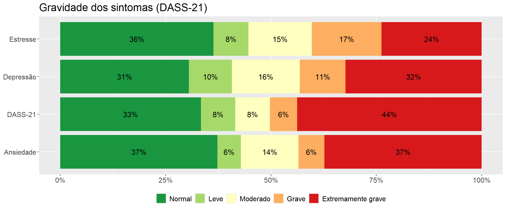
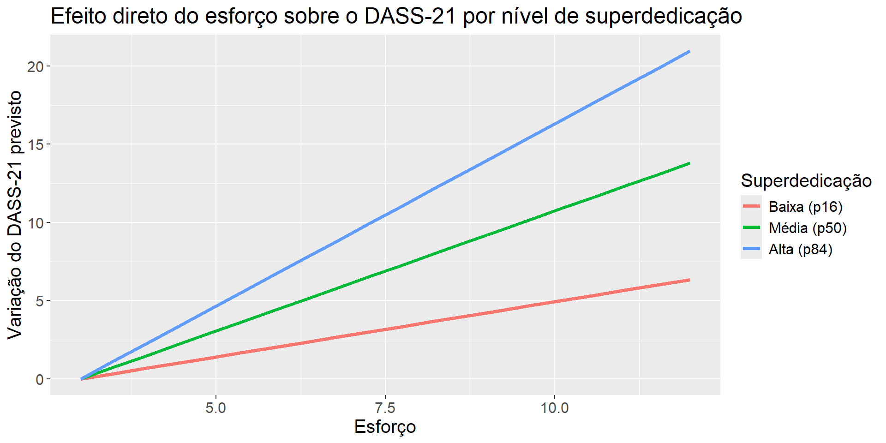

Saúde Mental de Bancários: validação psicométrica e modelos do sofrimento relacionado ao trabalho
Hugo Batista da Silva
Nota
Os projetos 6.1 e 6.2 foram feitos para o mesmo cliente, um grupo de pesquisa em psicologia do trabalho do Programa de Pós-Graduação em Psicologia da Universidade Federal do Espírito Santo (UFES), mas usam bases de dados e análises diferentes. Esta página é a primeira; a segunda, com dados administrativos da Polícia Rodoviária Federal, é o Projeto 6.2.
Sobre o projeto
Este estudo foi um projeto de pesquisa da UFES (edital PIIC 2023/2024) realizado com o Sindicato dos Bancários do Espírito Santo (Sindibancários-ES). O setor bancário passou por mudanças profundas nas últimas décadas: digitalização, metas de vendas, pressão por resultados e insegurança no emprego. O sindicato precisava de dados sobre a saúde mental da categoria, e o grupo de pesquisa elaborou um questionário online para entender como o sofrimento se constrói entre os bancários.
O questionário recebeu 784 respostas. Mantendo apenas quem aceitou o termo de consentimento, quem é bancário da ativa e quem trabalha no Espírito Santo, restam 665 questionários válidos. Fui responsável pela análise estatística: a validação das escalas, a análise descritiva e os modelos que relacionam o contexto de trabalho à saúde mental dos trabalhadores.
Referencial teórico
O questionário combina seis instrumentos. Cada um mede um construto, um conceito teórico que não pode ser observado diretamente e é medido por um conjunto de itens:
Construto
Instrumento
Dimensões
Papel no estudo
Saúde mental
DASS-21 (Lovibond & Lovibond, 1995)
Depressão, ansiedade, estresse
Desfecho principal
Desequilíbrio esforço-recompensa
ERI, versão reduzida (Siegrist)
Esforço, recompensa (estima, promoção, segurança no emprego), superdedicação
Risco psicossocial
Sentimentos sobre o trabalho bancário
BEST-8
Pressão das metas de venda, conflito moral, perda de sentido
Risco específico do setor
Contexto de trabalho
EACT (Mendes & Ferreira)
Condições de trabalho, organização do trabalho, relações socioprofissionais
Risco psicossocial
Danos relacionados ao trabalho
EADRT (Mendes & Ferreira)
Danos físicos, psicológicos e sociais
Segundo desfecho
Assédio no trabalho
Bloco de atos negativos do questionário
Assédio frequente (sim / não)
Risco psicossocial
A ideia teórica que orienta a análise é uma cadeia: um contexto de trabalho adverso e um desequilíbrio entre o esforço exigido e a recompensa recebida geram tensão; a superdedicação, um padrão pessoal de dedicação excessiva ao trabalho, amplifica essa tensão; e o resultado aparece como sintomas de depressão, ansiedade e estresse e como danos à saúde física, psicológica e social.
A base de dados
Os dados são reais, mas protegidos pela LGPD. Na versão publicada aqui, todas as características sociodemográficas e socioprofissionais foram retiradas (idade, sexo, raça, escolaridade, filhos, cidade, banco, cargo, tempo de trabalho), assim como datas e respostas abertas, e cada pessoa recebeu uma nova chave aleatória. Permanecem apenas os itens das escalas e as variáveis de trabalho e saúde usadas nos modelos.
Os escores são calculados a partir dos itens, seguindo as regras de cada instrumento:
DASS-21: soma dos 21 itens (0 a 63); em cada subescala a soma dos seus 7 itens é multiplicada por 2, como recomendam os autores, e classificada pelos pontos de corte de Lovibond e Lovibond (1995). A classificação geral usa os pontos de corte no escore total definidos pela equipe de pesquisa.
ERI: somas de esforço (3 itens), recompensa (7 itens) e superdedicação (6 itens); a razão esforço-recompensa é \(ER = E / (R \times 3/7)\), em que \(3/7\) corrige o número diferente de itens. Valores acima de 1 indicam mais esforço que recompensa.
EACT e EADRT: média dos itens de cada fator. Na EACT, escores mais altos significam um contexto pior (de 1 a 5, crítico acima de 2,3 e grave acima de 3,7).
dataset_aux <-rbindlist(list( dataset[, .N, by = .(classe = classe_dep)][, escala :=tr("Depression", "Depressão")], dataset[, .N, by = .(classe = classe_ans)][, escala :=tr("Anxiety", "Ansiedade")], dataset[, .N, by = .(classe = classe_est)][, escala :=tr("Stress", "Estresse")], dataset[, .N, by = .(classe = classe_dass21)][, escala :="DASS-21"]))dataset_aux[, pct := N /sum(N), by = escala]ggplot(dataset_aux, aes(x = escala, y = pct, fill = classe)) +geom_col(position =position_stack(reverse =TRUE)) +geom_text(aes(label =ifelse(pct >=0.04, scales::percent(pct, accuracy =1), "")),position =position_stack(vjust =0.5, reverse =TRUE), size =4.5) +scale_fill_brewer(palette ="RdYlGn", direction =-1) +scale_y_continuous(labels = scales::percent) +coord_flip() +theme(text =element_text(size =15), legend.position ="bottom") +labs(title =tr("Severity of the symptoms (DASS-21)", "Gravidade dos sintomas (DASS-21)"),x =NULL, y =NULL, fill =NULL)

O quadro é alarmante: 50% dos bancários estão na faixa grave ou extremamente grave da classificação geral do DASS-21, e 14% já se afastaram do trabalho por motivo de saúde mental. As três dimensões são afetadas de forma parecida: entre 40% e 43% dos trabalhadores estão na faixa grave ou extremamente grave de depressão, ansiedade e estresse.
Antes de relacionar esses sintomas ao contexto de trabalho, é preciso verificar se as escalas realmente medem o que se propõem a medir.
Análise fatorial confirmatória
Cada escala foi construída com uma estrutura teórica: quais itens pertencem a qual fator. A análise fatorial confirmatória (AFC) testa se as respostas desses 665 bancários reproduzem essa estrutura. Como os itens são ordinais (escalas Likert), os modelos são estimados por WLSMV (mínimos quadrados ponderados com ajuste de média e variância) sobre as correlações policóricas, e o ajuste é avaliado pelas versões robustas (scaled) dos índices, as adequadas para esse estimador:
Índice
Bom ajuste
CFI e TLI
≥ 0,90 (aceitável), ≥ 0,95 (bom)
RMSEA
≤ 0,08 (aceitável), ≤ 0,05 (bom)
SRMR
≤ 0,08
Cargas fatoriais padronizadas
≥ 0,60
Ômega (ω) e alfa (α)
≥ 0,70
Variância média extraída (AVE)
≥ 0,50
A função abaixo ajusta um modelo e reúne em uma tabela os índices de ajuste e a confiabilidade de cada fator:
ajusta_cfa <-function(modelo) {cfa(modelo, data = dataset, estimator ="WLSMV", ordered =TRUE)}resumo_cfa <-function(fit) { ajuste <-fitMeasures(fit, c("chisq.scaled", "df", "cfi.scaled", "tli.scaled", "rmsea.scaled", "srmr"))# reliability of the first-order factors on the latent-response scale (ordinal items):# ordinal alpha from the polychoric correlations, McDonald's omega and AVE from the standardised loadings cargas <-as.data.table(standardizedSolution(fit))[op =="=~"&!rhs %in%lavNames(fit, "lv")] policoricas <-lavInspect(fit, "sampstat")$cov alfa_ordinal <-function(v) { r <- policoricas[v, v]; k <-length(v); k / (k -1) * (1- k /sum(r)) } confiab <- cargas[, .(itens = .N,alfa =alfa_ordinal(rhs),omega =sum(est.std)^2/ (sum(est.std)^2+sum(1- est.std^2)),ave =mean(est.std^2),carga_min =min(est.std),carga_max =max(est.std)), by = .(fator = lhs)]list(ajuste =round(c(ajuste, "chisq/df"= ajuste[["chisq.scaled"]] / ajuste[["df"]]), 3),fatores = confiab,admissivel =lavInspect(fit, "post.check"))}
Saúde mental (DASS-21)
O DASS-21 é modelado com seus três fatores de primeira ordem e um fator de segunda ordem, o sofrimento geral, como propõe o modelo tripartido.
A estrutura do DASS-21 se confirma: todas as cargas ficam entre 0,82 e 0,94, os três fatores têm ômega acima de 0,95 e AVE acima de 0,77, e o CFI robusto é 0,986, com RMSEA de 0,074. O teste qui-quadrado rejeita o ajuste exato, o que é esperado com uma amostra desse tamanho, e os demais índices mostram um modelo adequado.
Perfil do trabalho (ERI e BEST-8)
O modelo teórico original tem seis fatores de primeira ordem (BEST-8, esforço, estima, promoção, segurança no emprego e superdedicação), com estima, promoção e segurança agrupados em um fator de segunda ordem de recompensa.
O modelo de segunda ordem produz uma solução imprópria (um caso de Heywood): a carga de segurança no emprego sobre recompensa é maior que 1, o que implica uma variância residual negativa. As correlações entre os fatores de primeira ordem mostram o porquê:
A segurança no emprego está mais fortemente (e negativamente) relacionada à superdedicação (r = -0,73), ao esforço (r = -0,77) e ao BEST-8 (r = -0,74) do que às outras duas dimensões da recompensa. Nesta população, o medo de perder o emprego se comporta mais como parte da pressão do trabalho do que como uma recompensa. Por isso o modelo foi reespecificado com fatores de primeira ordem correlacionados, o que gera uma solução admissível.
O ajuste deste construto é o mais fraco do estudo (RMSEA robusto de 0,107), e as dimensões da recompensa, com apenas dois ou três itens cada, são o ponto fraco: promoção e segurança no emprego têm confiabilidade baixa (ω perto de 0,6) e AVE abaixo de 0,5. Estima, BEST-8, esforço e superdedicação têm confiabilidade de adequada a excelente. Essas limitações são consideradas na interpretação dos modelos.
Contexto de trabalho (EACT) e danos relacionados ao trabalho (EADRT)
Os dois construtos se confirmam: os fatores têm confiabilidade excelente (ômega acima de 0,92) e AVE acima de 0,53, com CFI robusto de 0,937 e 0,97. Os valores de RMSEA ficam um pouco acima de 0,08, resultado comum em escalas longas, e o SRMR fica dentro do limite. No fator organização do trabalho, três itens têm cargas baixas (OrgTrab9, OrgTrab6 e OrgTrab10, de cerca de 0,3 a 0,5); eles foram mantidos para preservar o instrumento validado, e o fator continua com boa confiabilidade, mas são candidatos a revisão em aplicações futuras.
Com as medidas validadas, os escores calculados antes podem ser usados nos modelos.
Todos os fatores de risco vão na direção esperada: superdedicação, esforço, BEST-8 e as três dimensões do contexto de trabalho se correlacionam positivamente com o DASS-21, enquanto a recompensa se correlaciona negativamente. A superdedicação é o construto mais correlacionado com os sintomas, e o DASS-21 tem forte correlação com o dano psicológico, os dois desfechos do estudo.
Regressão linear para o DASS-21
O primeiro modelo explica o escore total do DASS-21. As variáveis foram selecionadas entre os fatores de risco do referencial teórico, mantendo as que têm contribuição significativa e sem multicolinearidade. A pergunta sobre assédio tem respostas faltantes, então o modelo usa os 546 bancários que a responderam.
O modelo explica 57,8% da variabilidade do DASS-21 (R² ajustado), todos os coeficientes são significativos e os valores de VIF ficam abaixo de 2, sem multicolinearidade. Mantendo as demais variáveis constantes:
cada ponto de superdedicação acrescenta 1,46 pontos ao DASS-21;
cada ponto no escore de relações socioprofissionais acrescenta 2,56 pontos. Como na EACT um escore maior significa um contexto pior, relações de trabalho piores se associam a mais sintomas;
cada ponto de segurança no emprego retira 1,04 pontos, um fator de proteção;
sofrer assédio frequente acrescenta 6,8 pontos, o maior efeito do modelo;
cada ponto do BEST-8 acrescenta 0,29 pontos.
Diagnóstico
Os pressupostos do modelo são verificados: observações influentes, normalidade e homocedasticidade dos resíduos.
n <-nobs(fit_lm)k <-length(coef(fit_lm))cook <-cooks.distance(fit_lm)influentes <-which(cook >4/ n)par(mfrow =c(1, 3))plot(hatvalues(fit_lm), type ="h", xlab =tr("Observation", "Observação"), ylab =tr("Leverage", "Alavancagem"))abline(h =2* k / n, col ="red", lty =2)plot(cook, type ="h", xlab =tr("Observation", "Observação"), ylab =tr("Cook's distance", "Distância de Cook"))abline(h =4/ n, col ="red", lty =2)plot(fitted(fit_lm), rstandard(fit_lm), pch =20, xlab =tr("Fitted values", "Valores ajustados"),ylab =tr("Standardised residuals", "Resíduos padronizados"))abline(h =c(-2, 2), col ="red", lty =2)
teste p_valor
<char> <num>
1: Lilliefors (Kolmogorov-Smirnov) normality test 0.7653
2: Shapiro-Wilk normality test 0.5203
3: Anderson-Darling normality test 0.6283
4: Cramer-von Mises normality test 0.5852
bptest(fit_lm)
studentized Breusch-Pagan test
data: fit_lm
BP = 6.5305, df = 5, p-value = 0.258
Os resíduos não mostram evidência contra a normalidade, e o teste de Breusch-Pagan não rejeita a homocedasticidade. 36 observações têm distância de Cook acima de \(4/n\). Em vez de simplesmente excluí-las, o modelo é ajustado novamente sem elas como análise de sensibilidade, para verificar se as conclusões dependem desses pontos:
fit_lm_sem <-update(fit_lm, data = dataset[!is.na(assedio)][-influentes])data.table(variavel =names(coef(fit_lm)), completo =coef(fit_lm), sem_influentes =coef(fit_lm_sem))
Todos os coeficientes mantêm sinais e magnitudes parecidas. O R² ajustado sobe para 0,67 porque os pontos retirados são justamente os casos que o modelo explica pior, mas as conclusões sobre cada fator não dependem deles, por isso o modelo completo é mantido.
Regressão ordinal para a classificação do DASS-21
Na prática, o DASS-21 também é usado pela sua classificação (normal, leve, moderado, grave, extremamente grave). Uma regressão logística ordinal (modelo de chances proporcionais) estima como cada fator muda a chance de estar numa categoria mais grave. Aqui as relações socioprofissionais entram pela classificação da EACT.
O teste de Brant não rejeita o pressuposto de chances proporcionais, nem no geral nem para nenhuma variável, então o modelo é adequado. As razões de chances contam a mesma história do modelo linear:
cada ponto de superdedicação aumenta em 24% a chance de estar numa categoria mais grave;
promoção e segurança no emprego são fatores de proteção: cada ponto reduz a chance em 14% e 15%;
cada ponto do BEST-8 aumenta a chance em 5%;
bancários com relações socioprofissionais graves têm 2,58 vezes a chance daqueles com relações satisfatórias.
Mediação e moderação
As regressões mostram quais fatores se associam aos sintomas; o referencial teórico também propõe como eles agem. Foram testados dois modelos do referencial de Hayes (PROCESS), estimados aqui com o lavaan e intervalos de confiança por bootstrap (1.000 reamostragens) para os efeitos indiretos.
Superdedicação como mediadora (modelo 4)
O desequilíbrio esforço-recompensa aumenta os sintomas em parte por meio da superdedicação?
modelo_4 <-"superdedicacao ~ a * razao_erdass21 ~ c * razao_er + b * superdedicacaoindireto := a * btotal := c + a * b"set.seed(2024)fit_m4 <-sem(modelo_4, data = dataset, se ="bootstrap", bootstrap =1000)efeitos_m4 <-as.data.table(parameterEstimates(fit_m4, boot.ci.type ="perc"))[label !="", .(label, est, ci.lower, ci.upper, pvalue)]efeitos_m4
label est ci.lower ci.upper pvalue
<char> <num> <num> <num> <num>
1: a 4.492533 4.063386 4.979373 0.000000e+00
2: c 7.626224 5.580213 9.646547 3.190781e-13
3: b 1.785085 1.529959 2.086356 0.000000e+00
4: indireto 8.019552 6.745036 9.560305 0.000000e+00
5: total 15.645776 14.002100 17.343593 0.000000e+00
O desequilíbrio entre esforço e recompensa aumenta a superdedicação (a = 4,49), e a superdedicação aumenta os sintomas (b = 1,79). O efeito indireto é de 8,02, com intervalo bootstrap que não contém o zero, e o efeito direto continua significativo: a superdedicação medeia parcialmente o efeito do desequilíbrio, carregando cerca de 51% do efeito total.
Superdedicação como moderadora (modelo 5)
No modelo 5, o esforço age sobre os sintomas por meio da recompensa (mediação), e o seu efeito direto pode depender do nível de superdedicação (moderação).
e5 <-setNames(efeitos_m5$est, efeitos_m5$label)dataset_aux <-CJ(esforco =seq(min(dataset$esforco), max(dataset$esforco), length.out =20), nivel =1:3)dataset_aux[, superdedicacao := percentis[nivel]]dataset_aux[, dass_previsto := e5[["c1"]] * esforco + e5[["c2"]] * superdedicacao + e5[["c3"]] * esforco * superdedicacao]dataset_aux[, dass_previsto := dass_previsto - dass_previsto[1], by = nivel]dataset_aux[, nivel :=factor(nivel, 1:3, tr(c("Low (p16)", "Medium (p50)", "High (p84)"), c("Baixa (p16)", "Média (p50)", "Alta (p84)")))]ggplot(dataset_aux, aes(esforco, dass_previsto, colour = nivel)) +geom_line(linewidth =1.3) +theme(text =element_text(size =15)) +labs(title =tr("Direct effect of effort on the DASS-21 by level of overcommitment","Efeito direto do esforço sobre o DASS-21 por nível de superdedicação"),x =tr("Effort", "Esforço"), y =tr("Change in the predicted DASS-21", "Variação do DASS-21 previsto"),colour =tr("Overcommitment", "Superdedicação"))

O esforço reduz a recompensa percebida (a = -0,68), e menos recompensa significa mais sintomas (b = -1,01), um efeito indireto de 0,69 por ponto de esforço. A interação entre esforço e superdedicação é significativa: o efeito direto do esforço é de 0,7 para bancários com superdedicação baixa e cresce para 2,33 para os de superdedicação alta. O mesmo esforço faz mais mal a quem se dedica excessivamente ao trabalho.
Dano psicológico
Os mesmos fatores também explicam o segundo desfecho do estudo. No modelo para o dano psicológico (EADRT), o DASS-21 entra como preditor, junto com superdedicação, assédio, relações socioprofissionais e acompanhamento psiquiátrico:
O modelo explica 69,4% do dano psicológico. O DASS-21 é de longe o preditor mais forte (coeficiente padronizado de 0,5), seguido pela superdedicação e pelas relações socioprofissionais. O acompanhamento psiquiátrico aparece com coeficiente positivo: ele não causa dano, ele marca os casos que já são mais graves e estão em tratamento.
Como as análises convergem
Cada análise responde a uma pergunta diferente, e juntas apontam na mesma direção:
As medidas funcionam. A análise fatorial confirmatória valida o DASS-21, o contexto de trabalho e os danos relacionados ao trabalho. O único ponto frágil é a recompensa do ERI, em que a segurança no emprego se comporta como parte da pressão do trabalho.
A superdedicação é o fator central. É o construto mais correlacionado com os sintomas, tem o efeito mais forte nas regressões linear e ordinal, medeia o efeito do desequilíbrio esforço-recompensa e amplifica o efeito do esforço.
O contexto de trabalho importa para além do indivíduo. Assédio, relações socioprofissionais ruins e a pressão das metas de venda (BEST-8) aumentam os sintomas em todos os modelos, e segurança no emprego e promoção protegem.
Sintomas e danos são duas faces do mesmo sofrimento. O DASS-21 explica a maior parte do dano psicológico, o que fecha a cadeia proposta pelo referencial teórico: um contexto de trabalho adverso, filtrado pela superdedicação, vira sintomas e depois dano à saúde.
O mesmo instrumento, o DASS-21, e o mesmo tipo de pergunta, o que se associa ao sofrimento mental no trabalho, aparecem no Projeto 6.2, agora com dados administrativos e duas medições ao longo do tempo.
#Cleaning the environmentrm(dataset_aux, matriz, fit_perfil_2ordem)invisible(gc())